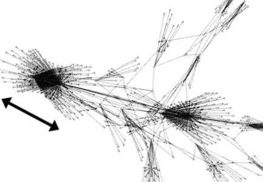

foundation

Stuart K. Card, Jock D. Mackinlay, and Ben Shneiderman,
Readings in Information Visualization: Using Vision to Think, Chapter 1: Information Visualization,
Morgan Kaufmann, 1999, 1-33.
viz examples


interaction → dynamic filters
Jeffrey Heer and Ben Shneiderman,
Interactive dynamics for visual analysis,
Communications of the ACM, 55(4), April 2012, 45-54.

Christopher Ahlberg and Ben Shneiderman,
Visual information seeking: tight coupling of dynamic query filters with starfield displays,
Proc. ACM CHI, 1994, 313-317.
[video]
The infovis classic illustrates filter, details-on-demand.

Ken Fishkin and Maureen C. Stone,
Enhanced dynamic queries via movable filters,
Proc. ACM CHI, 1994, 415-420.
optional
What does the user want to see? What do the data want to be?,
Information Visualization, 8(3), 2009, 153-166.
d3 toolkit
trees & graphs
Ivan Herman, Guy Melançon, and M. Scott Marshall,
Graph Visualization and Navigation in Information Visualization: A Survey,
IEEE Transactions on Visualization and Computer Graphics, 6(1), 2000, 24-43.
Tatiana Von Landesberger, Arjan Kuijper, Tobias Schreck, Jörn Kohlhammer, Jarke J. van Wijk, J-D. Fekete, and Dieter W. Fellner,
Visual analysis of large graphs: state-of-the-art and future research challenges,
Computer graphics forum, 30(6), Blackwell Publishing Ltd, 2011, 1719-1749.
Benjamin B. Bederson, Ben Shneiderman, and Martin Wattenberg,
Ordered and quantum treemaps: Making effective use of 2D space to display hierarchies,
AcM Transactions on Graphics (TOG), 21(4), 2002, 833-854.
optional
Stephen G. Kobourov, and Kevin Wampler
Non-Eeuclidean spring embedders,
IEEE Transactions on Visualization and Computer Graphics, 11(6), 2005, 757-767.
Nathalie Henry, Jean-Daniel Fekete, and Michael J. McGuffin,
NodeTrix: a hybrid visualization of social networks,
IEEE Transactions on Visualization and Computer Graphics, 13(6), 2007, 1302-1309.
Emden R. Gansner, Yehuda Koren, and Stephen C. North
Topological fisheye views for visualizing large graphs,
IEEE Transactions on Visualization and Computer Graphics, 2005, 457-468.
Tamara Munzner,
Exploring large graphs in 3D hyperbolic space,
Computer Graphics and Applications, IEEE, 18(4), 1998, 18-23.

Mathieu Jacomy, Sebastien Heymann, Tommaso Venturini, and Mathieu Bastian
Forceatlas2, a continuous graph layout algorithm for handy network visualization,
Medialab center of research, 560, 2011.
Javascript
code
in github.
Helen Gibson, Joe Faith, and Paul Vickers
A survey of two-dimensional graph layout techniques for information visualisation,
Information visualization, 12(3-4), 2013, 324-357.
search visualization
Marti Hearst,
Information Visualization for Search Interfaces,
Search User Interfaces, Cambridge University Press, 2009, Ch. 10.
Marti Hearst,
Information Visualization for Text Analysis,
Search User Interfaces, Cambridge University Press, 2009, Ch. 11.